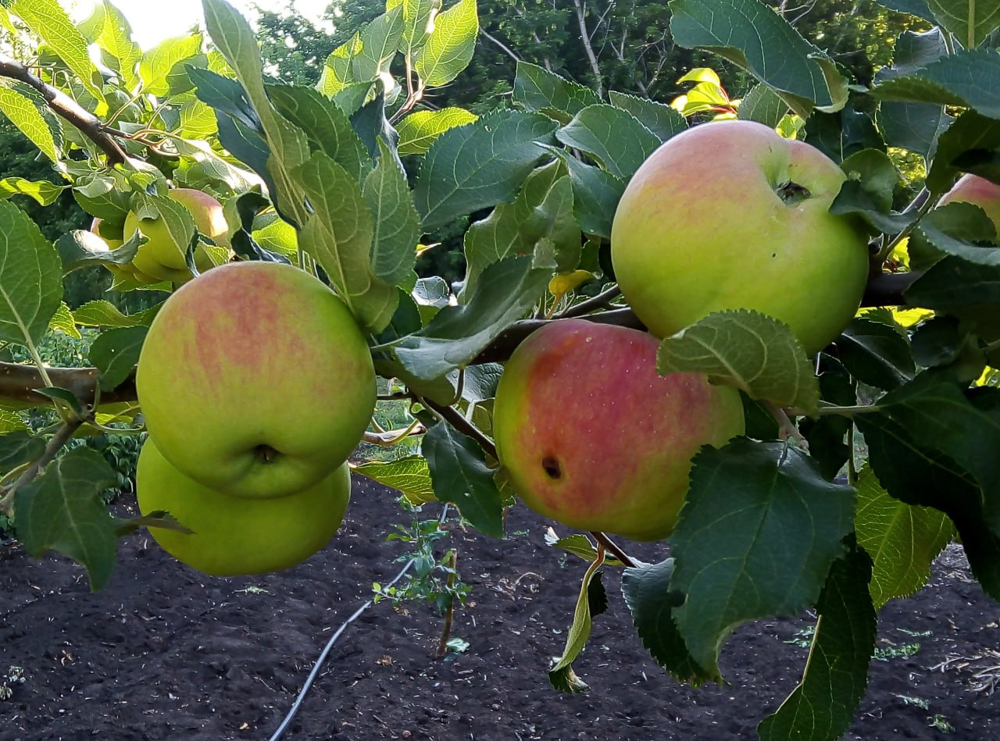

Мечтаете о собственном плодовом саде? Начните с качественных саженцев!
В селе Грачёвка я предлагаю к продаже здоровые и крепкие саженцы яблонь и груш. Это отличная возможность вырастить свои собственные, экологически чистые фрукты прямо на участке!
🍎 Яблони: Разнообразные сорта, адаптированные к нашему климату, которые будут радовать вас сочными плодами.
🍐 Груши: Выбирайте из лучших сортов, чтобы наслаждаться ароматными и сладкими грушами.
Цены: от 500 до 600 рублей за саженец.
Не уверены, какой сорт выбрать или как правильно подготовить саженец к посадке? Я с удовольствием поделюсь своим опытом и дам подробные рекомендации по всем этапам – от выбора места до ухода за молодым деревом.
Приезжайте в Грачёвку и выберите саженцы для своего будущего урожая!

Яблоня Аксёна получила своё название в честь человека, который проводил испытания этой формы на севере Свердловской области (г. Серов) – Василия Матвеевича Аксёнова. Мякоть приятного кремового цвета, мелкозернистой консистенции, довольно плотная, но не очень хрустящая, средней сочности, аромат приятный.
Вкус хороший, кисло-сладкий. Вкусовые качества оценивают от 4,3 до 5,0 баллов. Вес плода средний: 110-130гр. созревает к 20 числам августа зимостойкость высокая, об этом часто упоминают садоводы. Но если сравнивать с материнской формой (Серебряное копытце), то Аксёна в этом компоненте слегка уступает. Обладает довольно мощным иммунитетом против основных болезней и вредителей культуры.
Особенно ценится за высокую устойчивость к 5-ти расам парши.